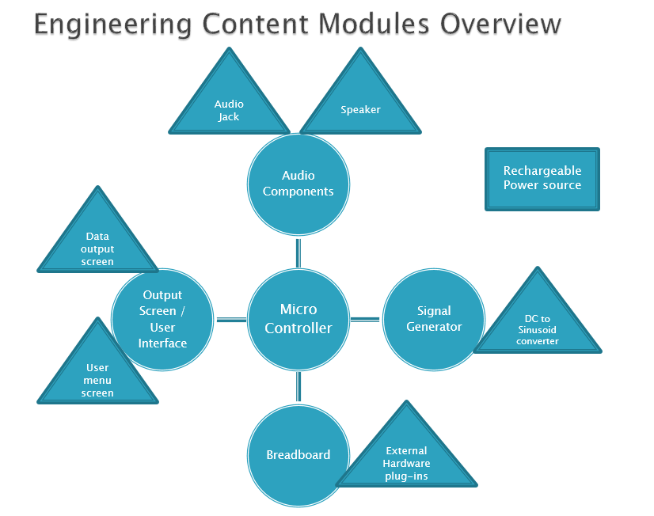

High Level Design
View PDF
Introduction
There is an effort in the College of Engineering to
improve the freshman engineering course (EE 10111-10112)
and make the course more interesting and educational. One
of the problems relevant to EE senior design is that there
is not an adequate introduction to the fun side of
electrical engineering that teaches fundamental concepts of
what electrical engineers do.
Problem Statement and Proposed Solution
Our goal is to create an engaging module for the
freshman engineering course representative of the different
applications of EE in the real world. There is presently
little exposure to EE concepts in the freshman course. In
addition to emphasizing civil engineering, computer
science, and robotics, the freshman course should contain a
module that focuses on circuits and signal processing,
clearly expresses what EE entails, and sparks interest in
the field among the freshmen. The concepts fundamental to
EE are also transferrable skills among different
engineering disciplines, such as familiarity with
microcontrollers, filters, and circuits.
The proposed solution is a new EE learning module, using
an EE Toolbox that will contain components to allow
students to gain an introduction to the different aspects
of EE. The Toolbox will be an interactive learning
environment designed to cover the basics of the Learning
Objectives (listed below). In order to achieve these
learning objectives, the Toolbox will contain many
components, also listed below.
- Learning objectives
- basic signal processing: waveforms,
waveform synthesis, basic signal analysis in
time/frequency domains. Students would have the
ability to input a waveform (audio signal) through
the audio jack or signal generator and have the
software process it digitally using preprogrammed
digital filters.
- RC circuits and software digital equivalents:
The signal can be passed through the breadboard,
using predesigned or student-initiated
circuits.
- Components
- Breadboard/circuit components/sensors
- Signal generator
- Display (LEDs, screen/output)
- Audio I/O
System Requirements
- Power
- rechargeable battery, 2 hours active use
- wall plug and adaptor
- button or switch
- Generate a signal
- AC/DC
- sinusoid generator
- amplifier
- 3V maximum
- User interface
- input
- menu of options
- buttons to select options
- output
- plot graphs of signals
- toggle between time and frequency
domains
- Breadboard
- Able to accept an input signal from the
microcontroller
- Prebuilt circuitry
- Hardware plugins consisting of prebuilt circuits
for students to put on the breadboard and connect
to their simpler circuits
- Needs to be compatible with the breadboard and easy
to use
- Audio I/O
- Audio jack
- Speakers
- Volume control
- Casing
- Toolbox, clear and pretty, size of a large
laptop
- LEDs
- Containers for basic circuitry/removable
components
- Fold closed, like a laptop
- Intelligence
- Accept and transmit analog and/or digital
signals, multiple bytes in series
- Signal processing software
- Menu for user interface, submenus,
navigation
System Block Diagram
Overall System

Subsystem and Interface Requirements
- Power: wall
- This is just going to be a wall plug, connected to an
adaptor to get a DC signal to recharge the
batteries.
- Power: batteries
- The output requirements will be determined by the DC to
sinusoid convertor and amplifiers. There will be
another conversion to a lower voltage for the board.
The absolute minimum length of battery life will be two
hours, but the goal will be to choose batteries that
run for six hours. These batteries will be
rechargeable from the wall power.
- DC to sinusoid convertor
- Preferably 10Hz to 100kHz; range of four orders of
magnitude, the minimum and maximum are
negotiable depending on pricing, power
consumption
- Software will dictate the frequency
- Amplifier to achieve proper amplitude of signal, gain
dictated by software
- External hardware plugins
- Filters
- Amplifiers
- ADC/DAC
- Data output screen
- Plot graphs of inputs and/or outputs
- Two plots at a time, maximum
- Display voltage levels, other signal information
- Select time vs. frequency domains
- User menu screen
- Top level menu choosing input and output sources
- Submenus to choose parameters for input and
- output
- Choose preprogrammed filters
- Speaker
- Audio jack
- Takes in a signal
- Send to ADC in microcontroller
- Software
- Signal processing software
- FFT function
- Plotting functions
- Data path control – select which signals are going
where
Future Enhancement Requirements
- Additional capability for signal generation: sawtooth and
square waves
- USB plugin
- Saving output plots
- Possibly for plugging in a laptop for extended
functionality.
- Programmability (via the keyboard or Pickit3)
- Cabinet for charging a set of Toolboxes, potentially
wireless charging
- Additional internal memory
- Protection for our software, by
password/encryption
High Level Design Decisions
User interface: buttons as inputs for LCD menu (as opposed
to toggles or switches)
Building our own amplifiers (as opposed to buying
one)
Using an external sinusoid generator, which entails having
an external circuit board that connects to the board we
design (exact part number TBD)
Open Questions
Part numbers: signal generator, LCD screens, audio jack,
speakers, rechargeable battery, wall plug and adaptor
Number and color of LEDs
Casing materials
Exact design of adaptors for audio components
Major Component Costs
Sinusoid generator ~$10
LCD screens ~$50
Power supplies ~$50
Audio components ~$25
Breadboard and circuit components ~$10
Casing materials ~$10-100
Conclusions
This project has the potential to have a lasting impact
on the engineering department at Notre Dame. The
subcomponents of the project provide expandability in terms
of external hardware plugins and pursuing future
enhancements. The subcomponents are diverse in their
purpose and implementation, which will draw on knowledge of
both devices and signal processing.